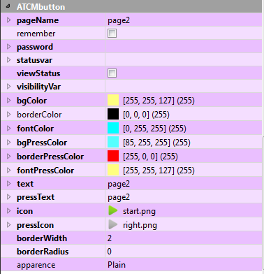

Aussehen und Funktionalität
Wenn Sie das Element auswählen, erscheinen seine Eigenschaften im rechten unteren Fenster des
Qtcreator-Fensters im Abschnitt ATCMbutton.

Durch die Änderung einer oder mehrerer dieser Eigenschaften können Sie das grafische Erscheinung und einige Funktionen anpassen.
Um die Änderung vorzunehmen, wählen Sie die rechte Spalte der entsprechenden Zeile..
Im Detail werden die Features zur Verfügung stehen:
pageName: Wenn Sie die Schaltfläche mit einer Seitenänderung verknüpfen möchten, müssen Sie den
Namen der Zielseite eingeben.
remember: Falls Sie die Zielseite im Auge behalten wollen, damit Sie das Schlüsselwort
BACK (angegeben in pageName) verwenden können.
passwordVar: Wenn Sie die Aktion der Schaltfläche mit einem numerischen Passwort schützen wollen,
müssen Sie hier die Variable des Crosstable schreiben, die das gewünschte Passwort oder direkt ein statisches numerisches Passwort enthält.
statusVar: Wenn Sie die Schaltfläche mit einer Zustandsänderung einer Umschaltvariablen verknüpfen
möchten, müssen Sie den Namen der Zielvariablen eingeben.
statusReleasedValue: Der Wert, den der statusVar annehmen wird, wenn die Taste losgelassen wird.
statusPressedValue: Der Wert, den der statusVar annehmen wird, wenn die Taste gedrückt wird.
viewStatus: Wenn angekreuzt wird, hat er eine rote bzw. grüne Farbe, wenn die Schaltfläche im
Umschaltmodus verwendet wird, je nachdem, ob die Einstellung der Variable statusvar fehlgeschlagen ist oder nicht und ob der Rand sichtbar ist.
refresh: Aktualisierungszeit des Objekts, ausgedrückt in Millisekunden.
visibilityVar: Wenn Sie die Sichtbarkeit des Objekts entsprechend dem Zustand einer Variablen verknüpfen
möchten, müssen Sie den Namen der Zielvariablen eingeben.
Im Detail wird für den grafischen Aspekt zur Verfügung stehen:
bgColor: bestimmt die Hintergrundfarbe des Objekts.
borderColor: bestimmt die Farbe der Kante des Objekts, nur wenn die Dicke der Kante größer
als Null ist.
fontColor: bestimmt die Farbe des Textes des Objekts.
bgPressColor: Dies ist ähnlich wie bgColor, wenn die Taste gedrückt wird.
borderPressColor: ist ähnlich wie borderColor, wenn die Taste gedrückt wird.
fontPressColor: ist ähnlich wie fontColor, wenn die Taste gedrückt wird.
text: ist der Text, der auf der Schaltfläche angezeigt wird.
pressText: ist ähnlich wie text, wenn die Taste gedrückt wird.
icon: ist das Symbol, das auf der Schaltfläche angezeigt wird. Durch Drücken der Taste “…”
können Sie die Systemsymbole einfügen. Das folgende Fenster erscheint, wählen Sie das Symbol und drücken Sie OK:

pressIcon: ist ähnlich wie icon, wenn die Taste gedrückt wird.
borderWidth: ist die Dicke in Pixeln der Kante des Objekts.
borderRadius: ist der Krümmungsradius der Kanten des Objekts.
apparence: ist der Stil, mit dem Sie das Objekt anzeigen möchten.
HINWEIS: In allen Eigenschaften, mit Ausnahme der ATCMplugins, ist es möglich, die “Context Help”
von Qt anzuzeigen, um eine Beschreibung der Operation zu erhalten: Wählen Sie die gewünschte Zeile aus und drücken Sie die Taste “F1” der Tastatur.
Um die Eigenschaften des Objekts per Code zu verwenden, geben Sie im Help→Index ein: QPushButton